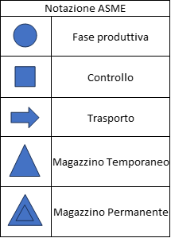
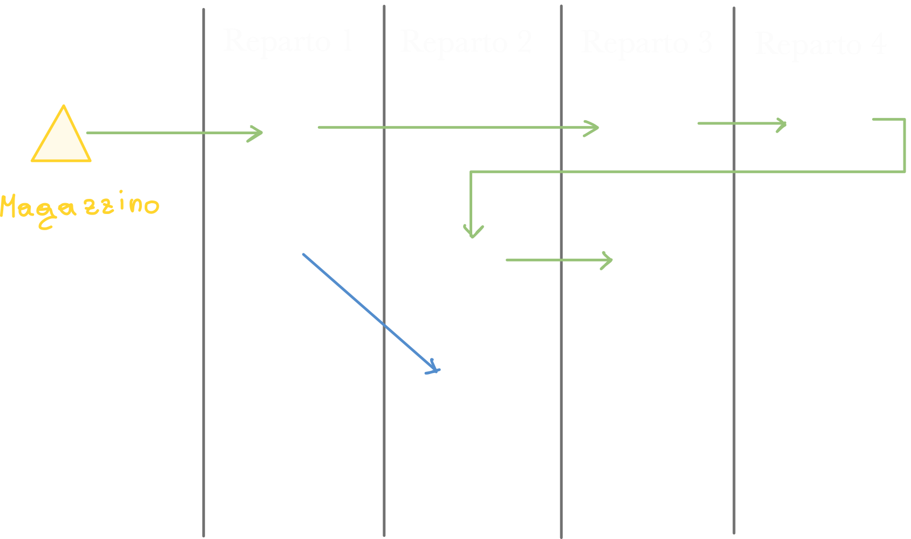
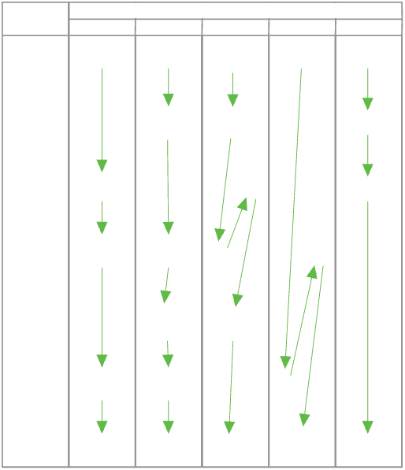
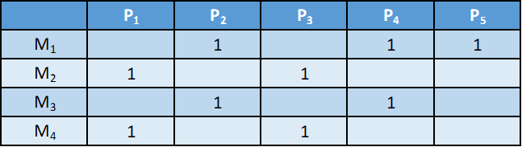
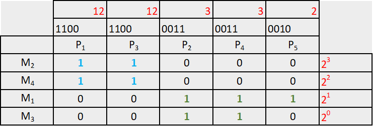
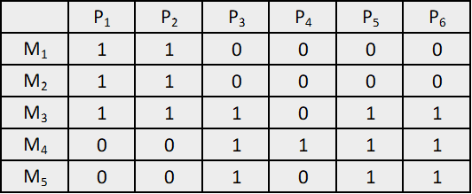
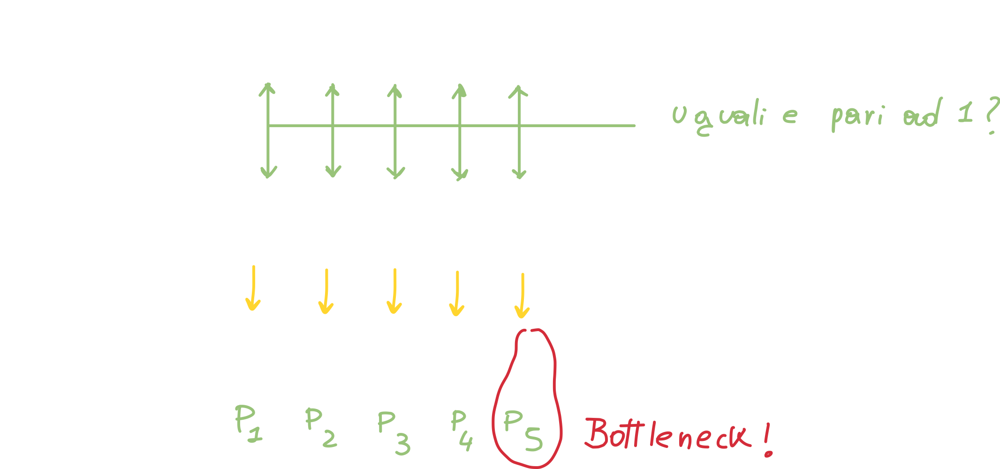

Studio del Plant Layout
A partire da pagina 64 capitolo 3
Lo studio del Plant Layout ha la seguente definizione:
Il Plant Layout è la progettazione della sistemazione plano-altimetrica di tutte le risorse di un impianto industriale
Questo non comprende solo la disposizione delle macchine, ma anche quellad degli uffici, degli addetti e dei materiali.
Lo studio del Plant Layout avviene solitamente nel momento in cui si deve:
- Realizzare un nuovo impianto partendo da zero.
- Modificare un impianto esistente per produrre un nuovo prodotto.
- Variazione della domanda che richiede, ad esempio, un volume di prodotto maggiore
- Obsolescenza dell'impianto e dei macchinari.
Ovviamente quando si esegue lo studio del PL ci si pone i seguenti obbiettivi:
- Utilizzare al meglio lo spazio che si ha a disposizione (ottimizzare lo spazio).
- Minimizzare gli investimenti di capitale.
- Minimizzare i costi dovuti al trasporto interno del materiale.
- Garantire condizioni di lavoro conformi agli standard legislativi.
- Prevedere eventuali ampliamenti futuri.
Fasi fondamentali dello studio
Possiamo suddividere lo studio del PL in 3 fasi principali:
- Raccolta ed analisi dei dati
- Elaborazione dei dati e ricerca delle possibili configurazioni
- Determinazione della soluzione migliore
Raccolta ed analisi dei dati
La prima fase è sicuramente quella di raccogliere più dati possibile al fine di avere un'idea generale ben chiara di ciò che servirà all'impianto; possiamo quindi elencare le informazioni più utili:
- Articoli da produrre - avere una lista dettagliata degli articoli (e quindi sapere qual è l'obbiettivo finale N.d.S.)
- Cicli di produzione - Essere a conoscenza di quali operazioni dovranno essere compiute per ottenere i prodotti finiti
- Volumi di produzione - Conoscere, oltre a "cosa" produrre, anche "quanto" produrre.
- Macchinari - Conoscere quali (e quanti) macchinari serviranno alla produzione
- Risorse umane
Per organizzare tutto questo, usiamo la notazione ASME - American Society of Mechanical Engineers:

Questa notazione ci è molto utile per rappresentare le varie fasi di produzione:
source L'ordine riportato sul libro a pagina 67 è diverso, ma a grandi linee è equivalente N.d.S.
Questa notazione viene usata sia nel Diagramma del flusso (come quello riportato sopra) e sia nel Grafico di flusso; entrambi rappresentano la successione delle operazioni produttive, oltre a trasporti, collaudi ed immagazzinamenti.
Classificazione delle configurazioni di layout
Possiamo classificare le configurazioni di layout attraverso le seguenti tre macrocategorie:
- Layout per Processo
- Layout per Prodotto
- Layout a Posizione Fissa
Layout per processo - Job shop
In questo caso si va ad accumunare le lavorazioni dello stesso tipo, e di conseguenza le macchine della stessa tipologia, all'interno dello stesso reparto. Un esempio potrebbe essere quello di accumunare nello stesso reparto tutte le operazioni di tornitura, saldatura, controllo qualità.
Quando possiamo adottare il layout per processo? Questo layout si presta molto bene per quel tipo di produzione in cui non si devono realizzare volumi troppo alti e dove la produzione non è particolarmente standardizzata; Possiamo quindi adottare questo metodo ogni volta che ci troviamo nelle seguenti condizioni (tutte devono essere vere):
- Ogni prodotto è realizzato in lotti piccoli rispetto alla capacità produttiva dei macchinari che compongono il reparto.
- Il processo di produzione dei prodotti è poco standardizzato e di conseguenza molto flessibile.

Layout per prodotto - Layout per linee
In questo genere di layout, invece di avere le stesse tipologie di macchine raggruppate in reparti, abbiamo una serie (linea) di macchinari anche molto diversi tra loro, ma che permettono di essere utilizzate una dopo l'altra su di un unico prodotto; in questo modo si riducono notevolmente i tempi di trasporto tra una sezione e l'altra; infatti i prodotti viaggiano su dei rulli motorizzati o trasportatori aerei.
Questo tipo di layout è adottato in quelle aziende che producono prodotti altamente standardizzati, come automobili, ed elettrodomestici.
Si possono adottare ulteriori accorgimenti per rendere ancora più ottimizzato questo layout: infatti il problema principale di questo layout è che utilizza molto spazio, sopratutto se è organizzato in linea. Di conseguenza se il prodotto parte da un deposito ad un estremo, dopo aver completato il processo arriva all'altro estremo che si trova molto lontano dal deposito; quaora il prodotto dovesse essere nuovamente portato al deposito iniziale, ci sarebbe un tempo di trasporto maggiore.
Possiamo quindi disporre questo layout in questi due modi:
- Layout ad U:
- Layout a Zig-Zag:

Inoltre, a volte si tende a raggiungere il volume minimo di prodotto che consente di lavorare a costi più bassi (in questo layout) andando ad aumentare la standardizzazione del prodotto, ovvero rendendo i prodotti sempre meno diversi tra loro.

Notiamo da questo grafico che:
Maggiore è la flessibilità
- maggiore è la differenziazione della produzione
- minore sarà il volume di produzione
- minore sarà l'efficienza della produzione
Minore è la flessibilità Siccome la flessibilità è minore, realizzo un solo prodotto, e la produzione di quel prodotto viene realizzata senza set-up, di conseguenza perdo meno tempo.
- minore è la differenziazione della produzione
- maggiore sarà il volume di produzione
- maggiore sarà l'efficienza della produzione
Flow Shop
E' simile alla produzione in linea ma con qualche cambiamento:
- Ha più stazioni di lavoro per ogni operazione
- E' più flessibile nel cambiare tipi di prodotto
- Richiede una pianificazione più complessa

Layout a posizione fissa (Project Shop)
In questo layout abbiamo la parte principale del prodotto che rimane ferma in un unico punto durante gran parte del processo di produzione. Questo tipo di layout è meno importante per la scarsità di problemi organizzativi del sistema di produzione.
Questo layout viene adottato per la produzione di prodotti altamente specifici, come motori di supercar, cantieri navali, etc.
Criteri di selezione della configurazione di layout ottimale
In questa analisi ci prefissiamo come obbiettivo quello di selezionare, attraverso un'opportuna analisi, il layout più indicato al la tipologia della nostra produzione.
Sicuramente in un'azienda possono esserci sia il layout per prodotto che il layout in linea (per processo) e bisogna selezionare per ogni prodotto, il suo layout ottimale; lo facciamo grazie ad un'analisi del volume di produzione di ciascun prodotto.
Infatti, esiste un valore del volume al di sopra del quale conviene utilizzare una lavorazione in linea, invece che una lavorazione per reparti, come avviene per volumi minori.
Andiamo quindi a rappresentare su di un grafico i volumi per ognio prodotto, ordinandoli per volume (decrescente):

Questo grafico è anche detto grafico 80/20, perchè l'80% della "popolazione" risiede nei primi 20% elementi.
Possiamo quindi effettuare un'interpolazione ed ottenere la seguente curva:

Possiamo suddividere il grafico in aree: A, B e C:
- A - Questa zona comprende le produzioni in grande quantità: per questi prodotti dovremo adottare una produzione in linea / configurazione per prodotto
- C - Questa zona comprende i prodotti con un volume minore: adotteremo una produzione per reparto.
- B - Questa è una zona media, che necessita un'analisi più approfondita per decidere se usare una produzione in linea o per reparto.
| Costi fissi | Layout a posizione fissa | Layout per reparti | Layout in linea |
|---|---|---|---|
| Progettazione del layout | Bassi (1) | 2 | 3 |
| Investimenti in impianti | Bassi (1) | 2 | 3 |
| Spazio richiesto | Elevato (3) | 2 | 1 |
| Costi variabili | |||
| Trasporti | Elevati (3) | 2 | 1 |
| Immobilizzi in scorte di processo | Elevati (3) | 2 | 1 |
| Scarti | - | 3 | 1 |
| Set-Up | - | 3 | 1 |
Questa tabella è stata modificata trasformandola in una tabella numerica, ma sul libro è presente la tabella testuale a pagina 75.
Possiamo leggere la tabella utilizzando i seguenti esempi:
- Il layout a posizione fissa si presta bene per bassi volumi; ha un costo di progettazione e di macchinari molto basso; ad ogni modo necessita di molto spazio: basti pensare ai cantieri navali.
- Il layout per reparti è un layout mediamente prestante: i costi di progettazione e dei macchinari sono medi, come i costi dei trasporti. Ha un elevato costo degli scarti e di set-up.
- Il layout in linea è quello che ha i costi di progettazione e di macchinari maggiore, ma eccelle in tutte le altre categorie: sfrutta molto bene gli spazi e i trasporti sono ridotti al minimo.
Possiamo rappresentare, ipotizzando una crescita lineare dei costi, mediante un grafico costi-volumi gli andamenti dei vari layout:

Questo grafico, sulla base delle precedenti considerazioni riguardo il grafico costi/volumi, ci fornisce un criterio, chiamato volume critico di produzione, per determinare la configurazione ottimale di layout.
Essenzialmente, da questo grafico otteniamo 3 range di volumi; utilizziamo questi range per posizionare all'interno dei diversi layout, tutti i prodotti da produrre N.d.S.
Studio delle soluzioni di plant layout
Con lo studio delle soluzioni di play layout andiamo ad analizzare due metodi maggiormente diffusi per la disposizione delle macchine sia nel caso di layout in linea che in layout per prodotto.
Il concetto principale è quello di avvicinare fra di loro le macchine ed i reparti; questi collegamenti vengono considerati come dei pesi che misurano quanto sia importante avvicinare tra loro i reparti.
Il costo di trasporto sarà direttamente proporzionale alla distanza ed il costo totale è dato dalla somma dei prodotti (pesi) nell'unità di tempo selezionata.
Possiamo quindi rappresentare sia la quantità da trasportare sia il costo di quel materiale attraverso due tabelle:
| da - a | 1 | 2 | ... | j | ... | n |
|---|---|---|---|---|---|---|
| 1 | ||||||
| 2 | ||||||
| ... | ||||||
| i | Pij | |||||
| ... | ||||||
| m |
Tabella dei flussi: l'elemento Pij indica il costo del materiale da trasportare dal reparto i al reparto j; l'unità di misura sarà l'unità di tempo scelta.
| da - a | 1 | 2 | ... | j | ... | n |
|---|---|---|---|---|---|---|
| 1 | ||||||
| 2 | ||||||
| ... | ||||||
| i | cij | |||||
| ... | ||||||
| m |
Tabella dei costi: l'elemento cij indica il costo del materiale da trasportare dal reparto i al reparto j; l'unità di misura sarà l'unità di distanza scelta.
Moltiplicando i due valori Pij * cij fornisce il costo del trasporto fra i reparti i e j nelle unità di distanza*tempo scelte.
Possiamo introdurre la grandezza dij che non è altro che la distanza tra i reparti al fine di calcolare il costo del trasporto (di quel singolo trasporto, non totale N.d.S.):

A - Metodo delle intensità di traffico
Costruiamo il seguente diagramma, dove le righe rappresentano le macchine o i reparti (per l'esempio funzionano meglio le macchine N.d.S.) e le colonne rappresentano i prodotti:

Possiamo trarre le seguenti conclusioni:
Per le colonne A, B, E possiamo adottare un layout di tipo Flow Shop (come il layout per linee ma con più macchine in parallelo); non adottiamo un layout di tipo in linea perchè altrimenti dovremmo avere una produzione in linea diversa per ogni prodotto, mentre con il Flow Shop ci basta una singola produzione per tutti i prodotti: infatti per essere completati i prodotti usano tutti le stesse macchine, ma in ordini diversi.
Per i prodotti C,D invece, dovremmo osservare il diagramma PQ (visto precedentemente, ci dice i prodotti aventi maggior volume di produzione); siccome il diagramma PQ suddivide i prdotti in fasce, possiamo decidere a seconda dei 3 casi:
- Fascia C: in questo caso abbiamo un volume bassissimo di produzione; sarebbe opportuno mandare in ad outsourcing, andando a far produrre ad una azienda terza i prodotti che fanno parte di questa fascia. In altre parole non ha senso creare una linea di produzione per questi prodotti, visto che i volumi sono talmente bassi.
- Fascia B: La fascia B è la fascia intermedia: in questo caso è opportuno fare un flow shop ed un job shop solo per C,D.
- Fascia A: In questo caso avremmo un 20% di prodotti ma che comportano l'80% del volume di produzione; questo vuol dire che ha molto senso fare un layout per linea solo per questi prodotti.
Possiamo riportare su una Matrice i flussi (somma in modulo dei flussi) che attraversano le macchine (o i reparti) a due a due:
E' strutturata come segue:
- Sulle righe e sulle colonne sono posti i macchinari (o reparti); lungo le righe questi sono in ordine crescente mentre lungo le colonne sono in ordine decrescente.
- I valori riportati in corrispondenza di due reparti ci dicono i valori di intensità di traffico che interessano quei due reparti/macchine; facciamo un esempio: In corrispondenza di 5-10 abbiamo un valore di 200; questo valore non ci dice quanto vale il flusso da 5 a 10 o da 10 a 5, ma ci dice solo il la somma dei flussi in modulo, di conseguenza sappiamo solo che dato un valore n da 5 a 10, avremo un N-n da 10 a 5.
- Nella parte finale (ad esempio 5-5, 4-4, etc.) abbiamo la somma totale; questa somma si fa sia per righe che per colonne:
Ad esempio, in corrispondenza al reparto 5 avremo:
200+110+100+210, dove l'ultimo fattore (210) proviene dalla cella 4-5. Questo valore ci dice il totale della movimentazione da e per il reparto 5, ovvero tutto quello che "parte" ed "arriva" al reparto 5.
Di conseguenza i valori lungo la diagonale principale abbiamo le intensità di traffico; ad esempio sappiamo che il reparto 2 è quello con il traffico maggiore (860).
Di conseguenza, potremmo pensare di disporre i reparti secondo un reticolo a maglie quadrate, andando a porre i reparti (o macchine) con il flusso maggiore al centro, proprio perchè devono essere quanto più vicini al resto dei reparti (ovviamente più vicini ai reparti con cui comunicano).
B - Metodo dei momenti
Applichiamo questo metodo per individuare la migliore sequenza delle macchine in presenza di un layout in linea, quando abbiamo più prodotti.
Dobbiamo però fare le seguenti ipotesi:
- Tutte le macchine occupano lo stesso spazio (stesso footprint)
- I contenitori per il trasporto sono tutti uguali per ogni prodotto
Possiamo calcolare la posizione più conveniente per ogni macchina (e non più reparto) nel seguente modo:
Troviamo quindi l'ordine migliore: A-C-B-E-D-F
Celle di macchine e la Group Technology
Celle di macchine
Si può pensare di raggruppare le macchine in maniera che ogni gruppo sia dedicato alla produzione di una famiglia di più parti simili tra loro; queste parti sono accumunate da similarità. Chiameremo quindi il grupo di parti accumunate, famiglia di parti, mentre il gruppo delle macchine che lavorano alla famiglia è detto cella di macchine.
In questo modo otteniamo un volume di produzione abbastanza alto che giustifica i costi, che rende economicamente conveniente la strategia; questa strategia è molto utile quando i prodotti in esame rientrano nella zona B, con un volume di produzione non troppo alto.
Possiamo ottenere questo risultato nel momento in cui si una una standardizzazione sia dei pezzi che del progetto; andando quindi a raggruppare pezzi simili nelle famiglie citate precedentemente. Standardizzare il ciclo tecnologico significa individuare un ciclo comune in ogni famiglia di pezzi; in questo modo avremmo una famiglia le cui lavorazioni variano solo numericamente, e non negli utensili utilizzati.
Otteniamo quindi, nei casi più favorevoli, una famiglia di pezzi simili che presentano un ciclo di produzione molto simile.
Group Technology (o celle di macchine)
Il concetto di Group Technology è proprio quello di decomporre un sistema di produzione in sottoinsiemi autonomi ed indipendenti; possiamo citare i vantaggi di questo sistema:
- Riduzione del tempo di setup complessivo.
- Riduzione del Lead Time (tempo necessario per completare un processo produttivo, dalla fase iniziale fino alla consegna del prodotto finito al cliente).
- Riduzione del Work-In-Progress (numero di unità o al valore dei prodotti o dei materiali che si trovano in vari stadi di lavorazione all'interno di un sistema produttivo in un dato momento).
- Riduzione dello spazio richiesto.
- Riduzione degli operatori necessari.
La fase più importante al fine di progettare dei sistemi di produzioni cellulari (ovvero a celle di macchine) è sicuramente l'individuazione delle famiglie:
- Famiglie di parti (PF)
- Famiglie di macchine (MF)
La cella di macchine è un compromesso tra il job shop e la linea, e coniuga i vantaggi del layout in linea con la flessibilità del job shop.
Consente, al contrario della produzione in linea, di differenziare maggiormente le produzioni.
Come possiamo anche vedere dalla matrice, la group technology si colloca tra i due layout "estremi".
Group Technology: Algoritmi
Recap: lezione 5
Con la Group Technology cerchiamo di operare nell'intervallo B del grafico P/Q visto precedentemente, ovvero per quei prodotti con un medio volume di produzione. La GT è molto utile nel momento in cui vogliamo sia un volume di produzione medio/alto, sia quando vogliamo un'alta differenziazione dei prodotti: basti pensare alle case automobilistiche odierne, che devono allo stesso tempo produrre un grande numero di automobili, ed allo stesso tempo avere un'alta differenziazione dei modelli.
Il nostro obbiettivo è quindi un layout misto in cui vogliamo raggruppare:
- Le Celle di macchine - gruppo di macchine
- Le Famiglie di parti - gruppo di pezzi
in modo che ogni gruppo di essi produca non una singola parte, ma una famiglia di parti aventi delle similarità tra di loro.
Rank Order Clustering - ROC
Partiamo dalla matrice binaria pezzo-macchina:

- Sulle colonne abbiamo i vari pezzi/parti (5)
- Sulle righe abbiamo le varie macchine (4)
Come leggere la matrice Questa matrice ci dice, ad esempio, che:
- L Macchina 1 lavora il pezzo p2, p4 e p5.
- La macchina 2 lavora il pezzo p1 e p3.
- ...
L'algoritmo ci fornirà come output la stessa matrice ma diagonalizzata; utilizzeremo questa seconda matrice per valutare le famiglie di parti e le celle di macchine.
Dopo aver capito qual è l'obbiettivo dell'algoritmo, vediamo di quali passaggi si compone:
- Ad ogni riga della matrice viene assegnato un peso binario e viene calcolato l'equivalente decimale
- Si ordinano le righe in ordine decrescente del corrispondente peso decimale
- Si ripetono i due passi precedenti anche per le colonne
- Si itera la sequenza fino a quando la posizione di ogni elemento all'interno della matrice non subisce più variazioni.
Dopo aver popolato la tabella, si ordinano le righe in ordine decrescente del corrispondente peso decimale:
Dopo aver fatto questo, ripetiamo il tutto per le righe (usando la tabella ordinata precedentemente!)
A questo punto ordiniamo anche le colonne:
A questo punto notiamo che la matrice è stata diagonalizzata:

Possiamo quindi identificare
- Famiglie di parti: F1 = [P1, P3]; F2 = [P2, P4, P5]
- Famiglie di macchine (celle): C1 = [M2, M4]; C1 = [M1, M3]
Spesso, però, può accadere che non riusciamo ad ottenere una diagonalizzazione della matrice.
Similarity Coefficent Method - SCM
Questo metodo valuta le celle di macchine e le famiglie di parti attraverso un coefficiente di similarità sij, che ci dice "quanto sono simili" le macchine i e j;
Consideriamo la seguente tabella

Possiamo calcolare il coefficiente s con la seguente formula:
Calcoliamo s per ogni coppia di macchine, tenendo conto che (traducendo le funzioni matematiche delta riportate sopra):
- Per il numeratore: se le due macchine hanno lo stesso valore binario, e questo valore è 1, allora la funzione delta vale 1. Calcoliamo il valore di delta per ogni pezzo (p1 --> m1,m2; p2 --> m1,m2; p3 -->...) e ne sommiamo i valori (c'è la sommatoria)
- Per il denominatore: il processo è il medesimo, ma delta vale 0 se entrambe le macchine hanno lo stesso valore e questo valore è 1.
In pratica avremo:

Dopo aver ottenuto tutti i coefficienti, costruiamo un grafico detto Dendogramma (lezione 5 31:37):
A questo punto scegliamo (o consultiamo la traccia del problema) un valore soglia:
Andiamo quindi a creare delle celle con le macchine che si trovano al di sopra del valore soglia scelto; in questo caso avremo due celle composte da
- C1 = [M1, M2];
- C1 = [M3, M4];
Nota: bisogna essere consapevoli che l'ordine "perfetto" di questo esempio è solo un caso; potremmo avere casi molto più complessi.
Gestione dei colli di bottiglia - Bottleneck
Duplicazione delle macchine
In questo caso abbiamo già applicato l'algoritmo ROC ma la matrice non risulta diagonalizzata:

Quando ci troviamo in questi casi, la prima cosa da fare è utilizzare l'algoritmo che segue (SCM); quello che però può accadere, è di avere delle macchine dette collo di bottiglia, come in questo caso: la macchina M3 è un collo di bottiglia.
Una macchina si dice collo di bottiglia quando non permette la decomposizione della matrice in due celle di macchine.
Quando abbiamo un collo di bottiglia, non ci sono soluzioni matematiche attuabili; dobbiamo quindi intervenire direttamente sul ciclo di lavoro:
- Soluzione 1: affidare la lavorazione di un prodotto problematico ad un'azienda esterna (outsourcing).
In questo caso, potremmo far produrre il pezzo P5 all'esterno in modo da evitare ogni problema.
- Soluzione 2: possiamo duplicare la macchina interessata: Potremmo quindi duplicare la macchina Maggiormente saturata (ovvero quella occupata maggiormente), che in questo caso è la macchina M3, che diventa M3'. Ovviamente quest'azione deve giustificare i costi.
InterCellular Movements - ICM
Questo metodo ci permette di assicurarci di essere in presenza di un Bottleneck andando a valutare il coefficiente ICM:

Possiamo considerare il seguente esempio:
Notiamo che alla matrice è stato applicato l'algoritmo ROC, ma che non l'ha completamente diagonalizzata: infatti notiamo che il prodotto 5 è lavorato sia da M1 che M3, ma che potrebbero appartenere a due celle diverse.
Quello che la formula di vik e della funzione delta ci dicono, è essenzialmente ciò che segue:
Confrontiamo la prima cella (composta da M1,M2 ed M3,M4):
- vik sarà uguale ad 1 se la somma dei pezzi è diversa da zero; otteniamo quindi v1k = [1, 1, 0, 0, 1], v2k = [0, 0, 1, 1, 1]
Confrontiamo adesso v1k e v2k: se i valori a due a due (per indice!) sono uguali tra loro e pari ad 1, allora la delta varrà 1;
Sommiamo i valori della funzione delta per ogni indice (prodotti!), otteniamo: ICM1,2 = 0, 0, 0, 0, 1 = 1
Se il coefficiente ICM ottenuto è pari ad 1, allora siamo in presenza di un bottleneck.
Ci può risultare più semplice visualizzare il confronto tra i due vettori andando a posizionarli in colonna:
